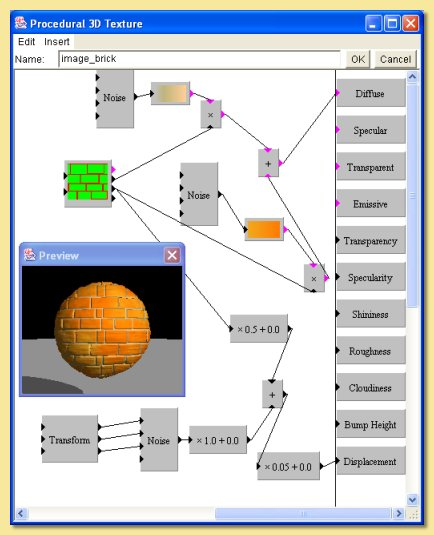
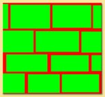
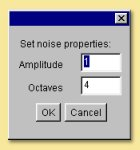
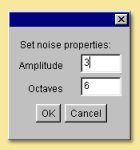

|  |
The basis of this texture is an brick-like image consisting of red bricks (R=1,G=0,B=0) and green
mortar (R=0,G=1,B=0) as shown below:  This image is selected with the image pattern module. Because of the way the colours have been used, the green output of this module will have a value of 1 for all green parts of the image (the "bricks") and 0 for everything else, and the red output will be 1 for all the red parts (the "mortar") and 0 everywhere else. This enables the bricks and the mortar to have different properties. The red output is multiplied by a noise function (Noise A below) fed into a 'mortar' colour map.  This has the result of applying the function only to the mortar. The green output is similarly fed into a brick-like colour map using the noise function (Noise B below).  |